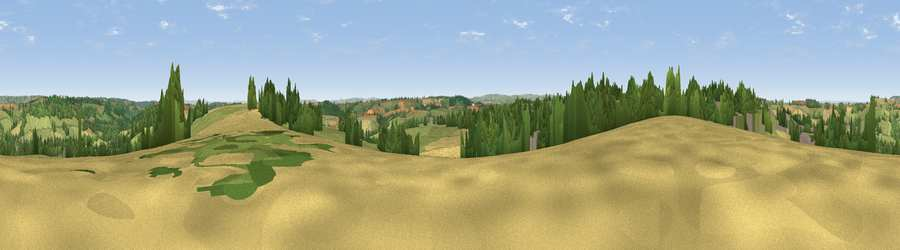

Viewpoint near Peasedown St. John
#16814 in England · top 29% of its area beats it · near Peasedown St. JohnThe view, rendered

A 360° render of this exact spot computed from the terrain model, tree cover and land cover — summer colours, afternoon light, calibrated against photographs of famous viewpoints. Real trees, hedges and buildings will differ in detail.
The panorama
Grey silhouette: terrain skyline in each direction (720 bearings, Earth curvature and refraction included). Dashed green: skyline with trees (+15 m) and buildings (+8 m) as obstacles. Blue strip: how far the ground is visible on each bearing.
Where the view opens
Wedge length = distance to the farthest visible ground on that bearing (vegetation-aware). Rings at 10, 25 and 50 km.
What fills the view
43% grassland · 26% cropland · 21% woodland · 10% built-up
Angular shares of the visible panorama (visual magnitude), not map area. Landscape diversity 0.56 (0–1 Shannon).
Key numbers
More beautiful places nearby
The staircase of upgrades: each row has a higher view potential than everything closer. Driving times are estimates from straight-line distance, calibrated against real road routing — check an actual route before setting out.
| Place | Direction | Drive | Score |
|---|---|---|---|
| Viewpoint near Peasedown St. John | E · 1 km | ~2 min | 60.1 |
| Viewpoint near Inglesbatch | N · 3 km | ~7 min | 68.8 |
| Viewpoint near Stanton Prior | NW · 7 km | ~15 min | 70.7 |
| Viewpoint near Kelston | N · 9 km | ~18 min | 74.2 |
| Viewpoint near North Stoke | N · 11 km | ~21 min | 75.4 |
| Hanging Hill | N · 12 km | ~23 min | 76.4 |
| Cley Hill | SE · 18 km | ~31 min | 76.8 |
| Viewpoint near Lamyatt | SSW · 23 km | ~37 min | 77.8 |
51.32016, -2.41143 · source: screening · position refined by local search. Computed location — check access rights before visiting.